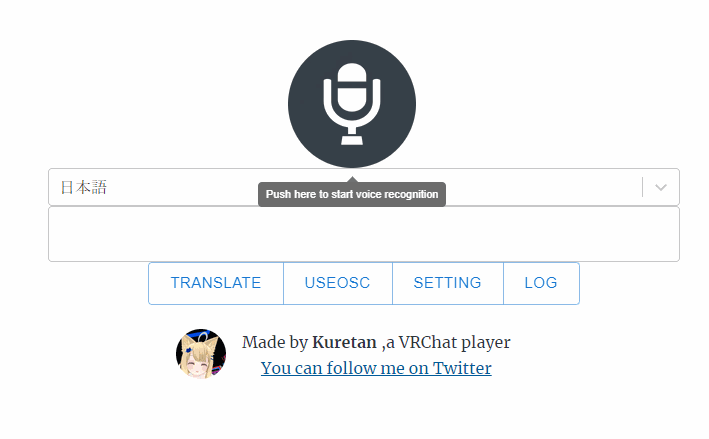
KAT Subtitleは音声認識を用いて、VR Chatでしゃべった言葉を文字として表示することのできるソフトウェアです。また自動翻訳や外部ソフトを利用することでの音声合成も可能です。NGワード除去機能付きなので、音声認識や翻訳ミスによる誤解を防ぐこともできます。
Google Chrome(Web Speech APIに利用します)
Web Speech APIの仕様状、Chronium(Edge)では挙動が不安定です。Chromeを使用してください。
KAT Subtitlesをダウンロード
↓
KAT_Subtitle.exeを起動
Kuretan Avatar Text をご自身のアバターに導入してください。 以降はサンプルアバターを使用するのと同じです。
KAT_Subtitle.exeを起動すると、ターミナル画面が表示されます。ターミナル画面にはログが表示されます。
KAT Subtitleを終了する際はこのターミナル画面を閉じてください 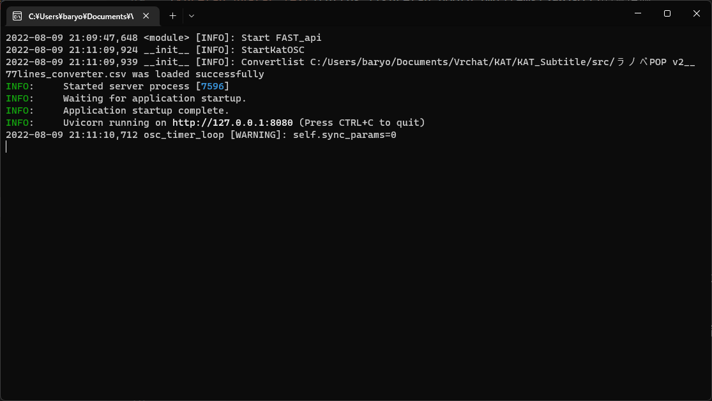
しばらく待つとconvertlistの選択画面が起動します。 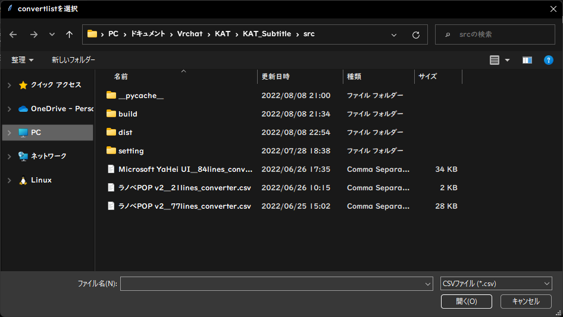
VR ChatのOSCは使用上数値しか送ることができません。そのため、文字を数値に変換する必要があります。 convertlistは数値を文字に変換するために使用する表にあたります。 選択画面が表示されましたら、ご自身の環境に合わせてファイルを選択してください。
ラノベPOP v2__21lines_converter.csv、
Kuretan Avatar Textの漢字対応版
ラノベPOP v2__77lines_converter.csv
KAT Charmapmakerを利用する場合
ご自身で作成されたconvertlist.csv
ファイル選択後、WebアプリKAT Subtitleとが起動します。
マイクのアイコンを押すと音声認識が開始されます。
認識された音声は画面の中央部に表示された後、ローカルサーバーを通じてVR Chatに送られます。送信された文字はターミナル画面に表示されます。非対応の文字を入力した場合は以下のような警告が表示されます。 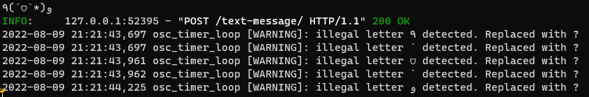 KAT Subtitleでは非対応の文字を?の記号に置き換えています。
非対応の文字だけど、VR Chat上で表示させたいという方は、ご自身で文字データーを作成されるか、あるいはKAT Charmapmakerのご購入をおすすめします。一般的な日本語の文章が入力できれば十分という方にはKuretan Avatar Textの漢字対応版をおすすめします。
現在の仕様上、64文字以上の文章は表示できません。音声認識中に文字数が64文字を超えた場合、超過した文字はVR Chat上では表示されません。
KAT Subtitleはタイピングによる手入力に対応しています。エディタ上に、直接文字を入力してください。 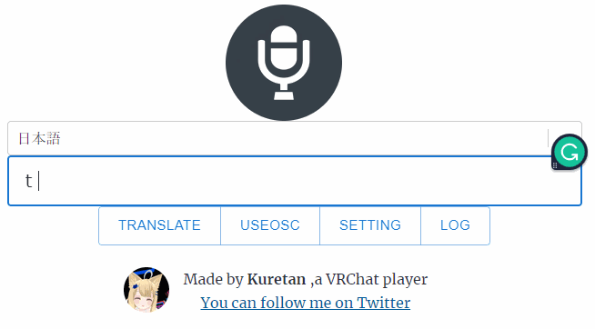
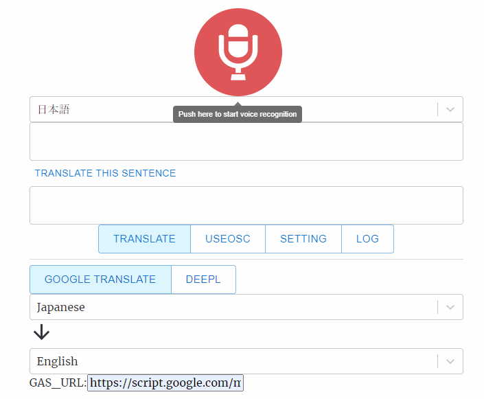
画面の中央部のプルダウンメニューから聞き取る言語を指定します。TRANSLATEボタンをクリックすると翻訳に関する項目が現れます。 翻訳機能は外部APIを利用している関係上、デフォルトでは機能せず、設定が必要です。 現在はGoogle翻訳(Google App Script)とDeep Lに対応しています。
Google翻訳を利用する場合は翻訳元言語と翻訳先言語を指定してください。 DeepLでは翻訳後の言語の指定のみでOKです。
音声認識した文章に関しては自動で翻訳されますが、手動で入力した場合は Translate this sentence をクリックしてください。
以下の記事にしたがい、翻訳用APIのURLを取得してください。
3 分で作る無料の翻訳 API with Google Apps Script - Qiita
この記事に従うと下記のようなURLが取得できます。(このURLは実際には機能しません。)
https://script.google.com/macros/s/TC7lrH6Wvgfvdfvgdbtrr9fVJ6z_ghf6ZIrg4wf85FKkI6AzG/exec
このURLをGAS_URLの欄に貼り付けてください。入力したURLはローカルサーバーに保存されるので、一度入力すれば以降は入力が不要となります。 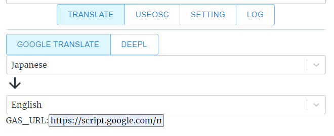
DeepL翻訳にはDeepLのAPIを利用します。
APIの利用にはAuthentication Keyが必要です。取得にはDeepLへ登録する必要があります。
DeepL Pro | Translate Text, Word Docs & Other Docs Securely
また登録に際してクレジットカードの登録が必要となりますが、無料版を利用する分には料金はかかりません。また現在は無料版のAPIのみ対応しています。
DeepLへのAPI利用申請ができましたら、DeepL account内にあるAuthentication Key for DeepL APIをコピーします。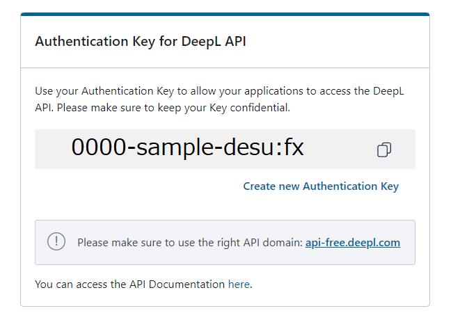
Authentication KeyをKAT SubtitleのDeepL_Authの欄に貼り付けたら設定終了です。Authentication Keyはローカルサーバーに保存されます。
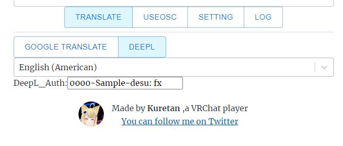
KAT Subtitleは棒読みちゃんに対応しています。 棒読みちゃん対応には棒読みちゃんWebSocketプラグインを利用します。
棒読みちゃん本体にプラグインを導入してください。KAT Subtitleではデフォルトで音声合成を無効にしています。有効にするにはSettingからMAKE VOICEをONにしてください。
設定終了後は、棒読みちゃんを起動しておくだけで、自動で入力した文章を読み上げてくれるようになります。翻訳をオフにしている際は認識した音声を、翻訳をオンにした際は翻訳語の文章を読み上げてくれます。
棒読みちゃんの音声をVR Chatへ出力する方法に関しては各自Google等で検索してください。
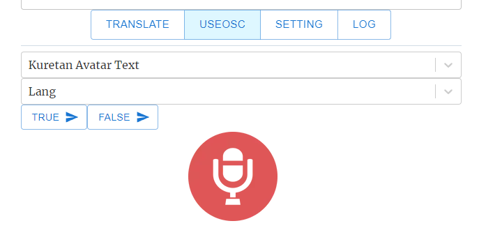
アバターの任意のパラメータを変更する機能です。例えば小物のの出し入れや、衣装の変更に使えます。
自動的にVR ChatがPC内に保存している設定ファイルを読み込みます。
設定ファイルに関する詳細はこちらを確認してください。 OSC Avatar Parameters
USEOSCを選択すると、プルダウンメニューが表示されます。 このプルダウンメニューには選択可能なアバターの一覧が表示されますので、現在使用しているアバターを選択してください。アバターを選択すると、もう一つ新たにプルダウンメニューが表示されます。
プルダウンメニューから変更したいパラメータを選択してください。 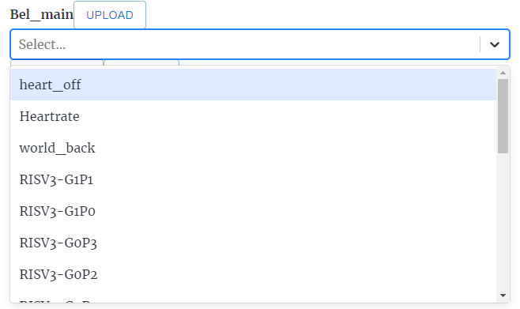 選択した項目に応じたメニューが表示されます。
選択したパラメータがBooleanの場合、TrueとFalseが表示されます。
Trueボタンを選択すると、そのパラメータをTrue(ON)にできます。
選択したパラメータがFloatあるいはintの場合は数値を設定できます。 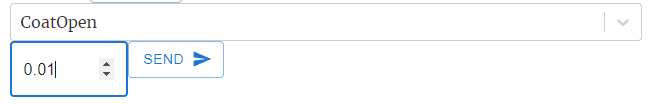
 Floatは-1から+1までの0.01刻み、intは0-255までの1刻みで選択が可能です。
Sendボタンで設定した値を送信できます。
Floatは-1から+1までの0.01刻み、intは0-255までの1刻みで選択が可能です。
Sendボタンで設定した値を送信できます。
今後のアップデートでは音声認識による操作に対応していく予定です。
画面下部に表示されるマイクをクリックするとVR Chat上でのマイクのオン/オフの切り替えを行えます。現状では挙動が不安なため、うまく動作しない可能性があります。。
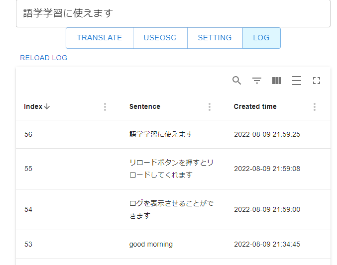
LOGにはこれまでに入力した文章が記録されています。語学学習の際の復習に活用できます。 現在の仕様上、特定の文章を削除、編集することはできません。
またデーターはすべてユーザーのPC内（main.db:SQlite）に保存されており、Webサーバー上には保存されていません。
exeファイルを起動する際に --no_web を追加すると、Webアプリを起動せず、ローカルサーバーのみ起動できます。
APIを公開しています。APIの詳細に関しては、KAT Subtitle起動後、Swagger UIを確認してください。APIを利用することで、独自の音声認識ソフトや翻訳ソフトが使用できます。
KAT SubtitleにはNGワード除去機能が備わっています。設定はsettingフォルダ以下のnglist_jp.csvとnglist_en.csvに保存されています。お好みに合わせて設定を変えることが可能です。
音声入力あるいは翻訳した内容は、外部サーバーで処理を行っている関係上、部外者に内容が伝わるリスクがあることをご留意ください。特にWeb speech apiに関しては、個人情報の扱いに関する規定がはっきりしていません。
このWebサイト自体のプライバシーポリシーに関してはPrivacy Policy | Kuretan's labを確認してください。
KATを利用するにはOSCを有効にする必要があります。アクションメニューを開き、Setting->OSC->Enabledを選択してください。
 詳細に関してはOSC Overviewをご確認ください。
詳細に関してはOSC Overviewをご確認ください。
またVR ChatのOSC機能は元々不安定です。一度は正常に動作していたのに、急に動かなくなった場合、そのほとんどはVR Chat側の問題です。またVR Chatの仕様上、Show Avatarが必要となることがあります。
KATはQuestに対応していないので、Questユーザーには見えません。またセーフティレベルの設定によっては、show avatrが必要となります。回線が重い場合は、適切に表示することができません。
React+Gatsby
Python(FastAPI)
SQlite
KillFrenzy Avatar Text OSC App
Apps Script | Google Developers
本ソフトウェアのローカルサーバーに関してはGNU General Public Licenseで配布しています。Webアプリに関しては現在非公開ですが、将来的には公開する予定です。本ソフトウェアを利用すことによって生じたいかなる損害に対しても私は責任を持ちません。すべて自己責任でよろしくお願いします。
私がVR Chatを始めたきっかけは英語の勉強をするためです。VRチャット上には語学の勉強に熱心な人がたくさんいます。彼らは熱心に言語交換をしていますが、しばしばうまくコミュニケーションがとれないことがあります。そんな際にVR Chat上に任意の文字を表示できたり、翻訳をしてくれる機能があったら便利だと思い、このアプリを作成しました。
KAT SubtitleはKuretan個人により開発されたソフトウェアです。もしKAT Subtitleを気に入っていただけたら、Boothでのブースト購入等で支援がいただけたらありがたいです。TwitterやVR Chat上での感想やコメント・フィードバックもお待ちしています。